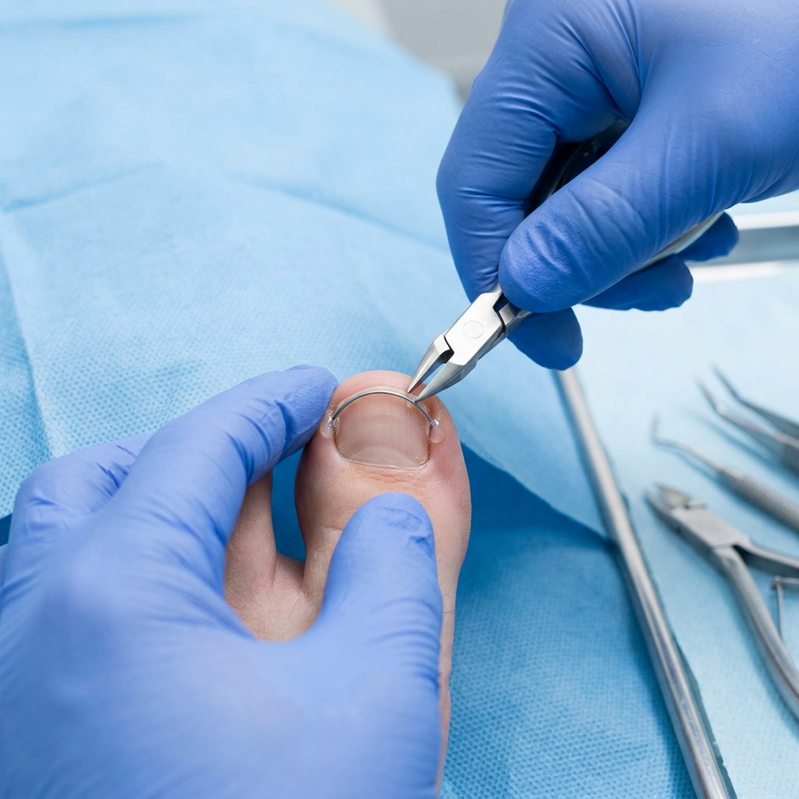

Orthonixie
Rovnání nehtů nehtovými rovnátky
Špičková metoda korekce zarůstajících a deformovaných nehtů pomocí prémiových nehtových rovnátek systému UniBrace M. Bezbolestný, nekrvavý postup s trvalými výsledky bez poškození nehtové tkáně.
UniBrace M · Certifikovaný specialista
